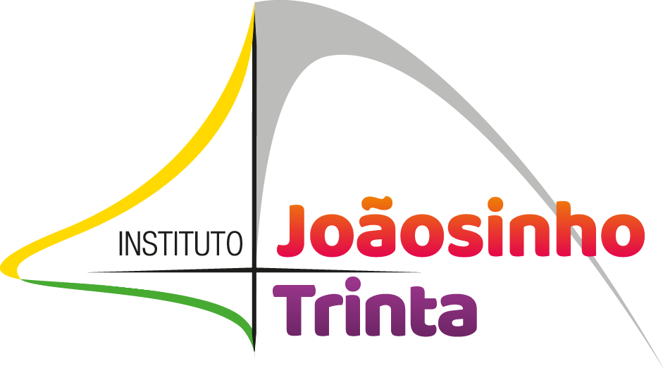

O artistaQuem somosProjetosColuna IJTJunte-seJoãosinho Trinta · 1933 a 2011
Role para abrir o arco
Onde houver cultura, haverá desenvolvimento humano.
Desde 2008, a gente leva o ofício dele para quem faz cultura no Brasil.
Ato II · Os títulos
Era assim que o chamavam. Foram oito títulos como carnavalesco.
Quem somos
O Instituto Joãosinho Trinta nasceu em 21 de outubro de 2008, criado pelo próprio Joãosinho ao lado de José Ricardo Marques. Há mais de quinze anos leva boas práticas ao setor cultural.
Recursos bem geridos e resultados públicos, para que as lições sirvam a toda a sociedade.
Soluções simples para os desafios da cultura, explicadas de um jeito acessível.
Benefícios e responsabilidades da cultura divididos de forma justa.
Boas práticas que mantêm a cultura viável, na economia e na vida das pessoas.
Inquietação diante dos desafios, com novas tecnologias e pesquisa aplicada.